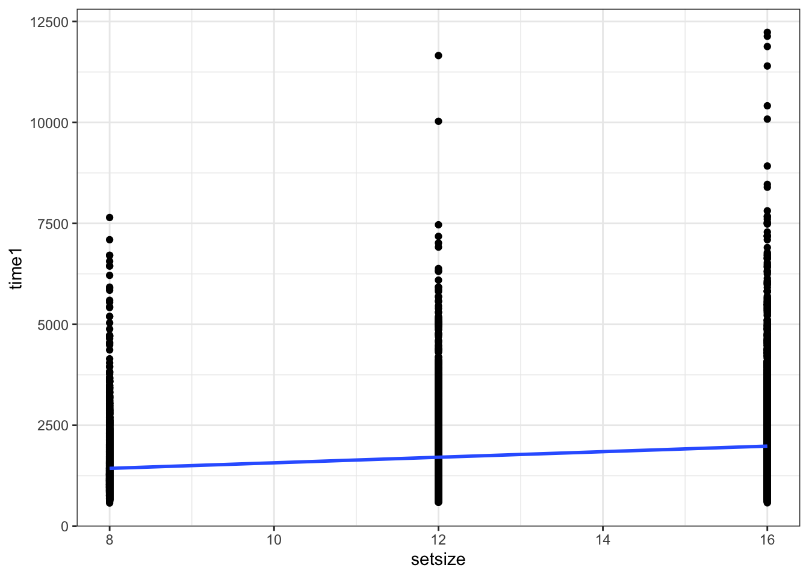
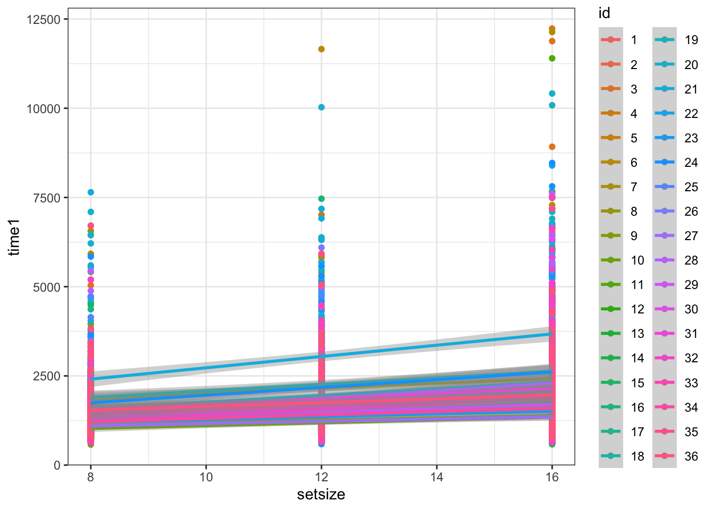
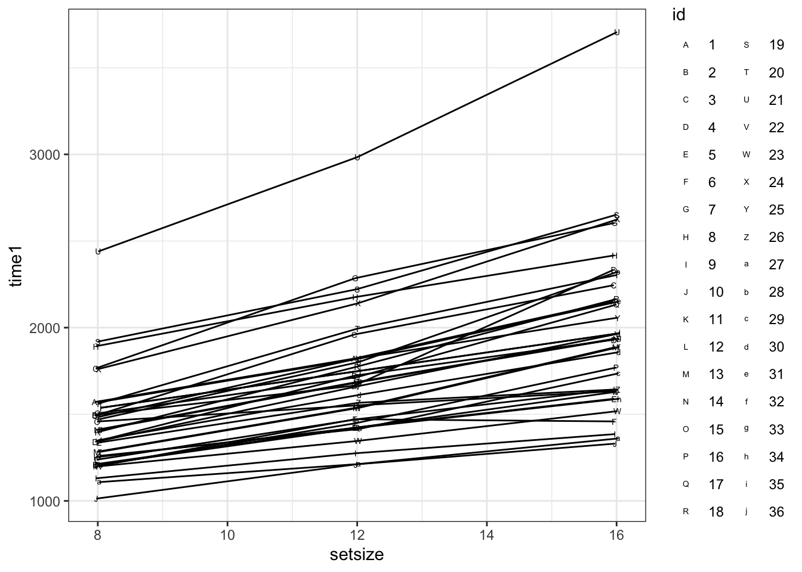
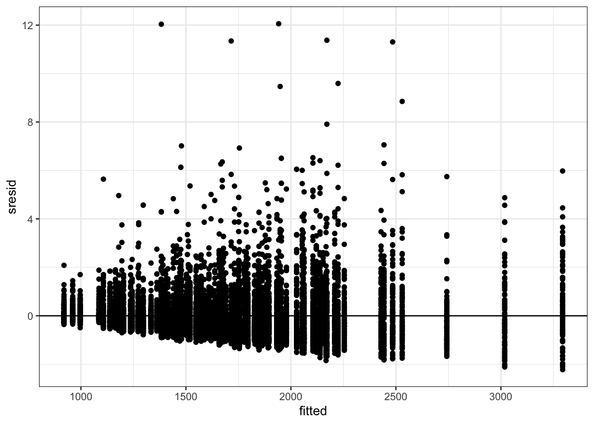
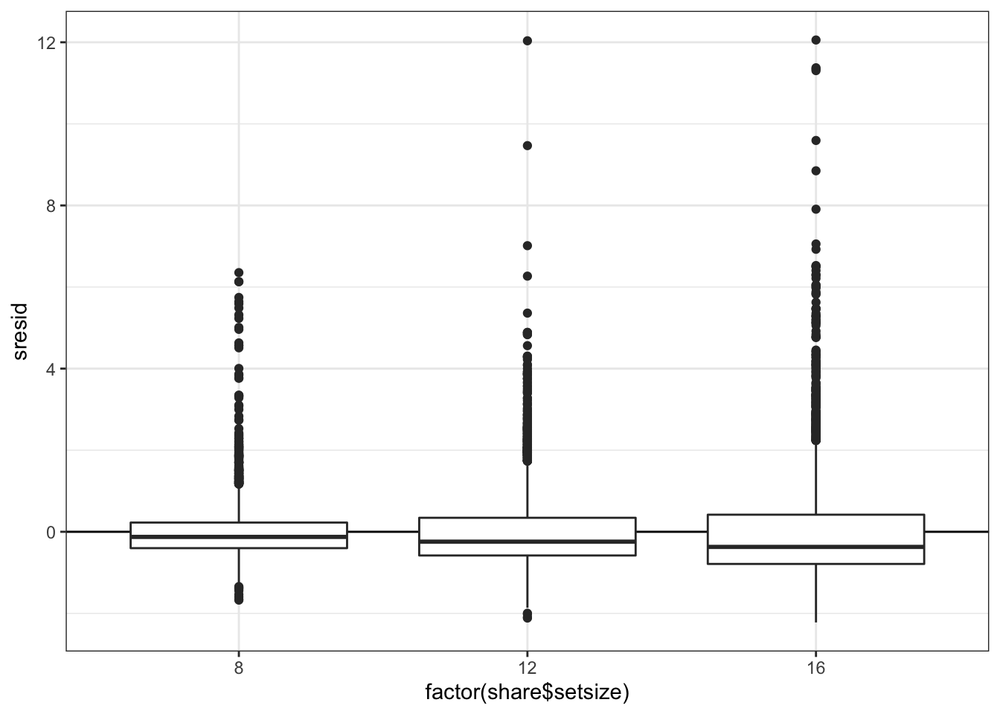
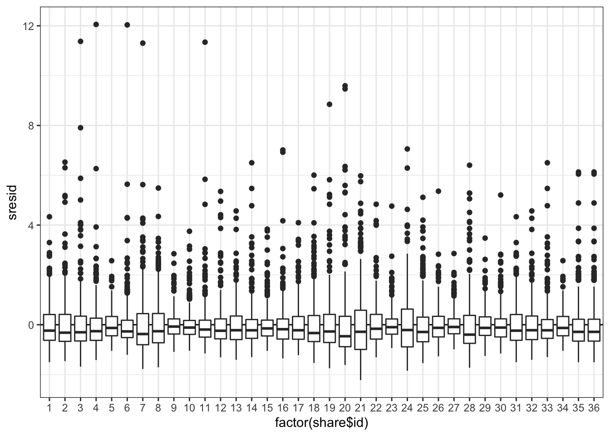

24 Смешанные линейные модели
24.1 Ограничения изученных ранее линейных моделей
При построении обычных линейных моделей мы предполагаем, что наши наблюдения независимы. Однако зачастую это требование не выполняется в полной мере, и наши данные имеют некоторую группировку (clustered data), которую, возможно, мы даже не планировали.
Примеры возможных группировок:
- измерения в разные периоды времени (разные партии химических реактивов, разные настройки аппаратуры)
- измерения в разных участках пространства (мониторы компьютеров могут различаться)
- повторные измерения (испытуемые / респонденты различаются между собой)
- измерения на разных группах испытуемых / респондентов (школьники разных классов в одной параллели могут различаться)
Возникают внутригрупповые корреляции — наблюдения из одной группы более похожи друг на друга, чем наблюдениях из разных групп.
Подобную структуру данных некорректно игнорировать — увеличивается вероятность ошибиться с выводами. Интуитивное решение: включить группирующие факторы в модель в качестве предикторов — технически так, безусловно, сделать можно, однако такой подход, во-первых, значительно усложные модель (чрезмерно увеличивается количество параметров), а во-вторых, ограничивает широту обобщения результатов (интерпретаировать параметры модели можно только для конкретных испытуемых / респондентов / учебных классов).
Чтобы решить возникающие трудности, необходимо ввести в модель случайные факторы.
24.2 Случайные vs фиксированные факторы
До сих пор мы работали только с фиксированными факторами — моделировали среднее значение для каждго уровня фактора. Если групп возникает много, то и моделируемых средных значений также много. Кроме того, когда мы задавали фиксированные факторы, мы считали, что сравниваемые группы фиксированные, и нас интересуют сравнения именно между ними.
Однако когда группировка возникает не как результат дизайна исследования, а как некоторый побочный результат (то есть, мы не планировали изучать фактор, по которому разделилась наша выборка), нам не важны конкретные значения интерсептов в каждой из групп. Мы можем представить данный фактор как случайную величину (величину «поправки»), и оценить дисперсию между уровнями группирующего фактора. Это и есть случайные факторы.
| Свойства | Фиксированные факторы | Случайные факторы |
|---|---|---|
| Уровни фактора | Фиксированные, заранее определенные, потенциально воспроизводимые | Случайная выборка из всех возможных уровней |
| Используются для тестирования гипотез | О средних значениях ЗП на разных уровнях фактора\(H_0: \mu_1 = \mu_2 = \dots = \mu\) | О дисперсии ЗП между уровнями фактора \(H_0: \sigma^2_r = 0\) |
| Выводы можно экстраполировать | Только на уровни анализа | На все возможные уровни |
На один и тот же фактор можно смотреть и как на случайный, и как на фиксированный в зависимости от задач исследователя. Так как мы хотим моделировать дисперсию, то у случайного фактора должно быть минимум пять градаций.
24.3 Почему обычные методы плохо работают?
Подгружаем данные:
## ── Attaching packages ─────────────────────────────────────── tidyverse 1.3.0 ──## ✓ ggplot2 3.3.3 ✓ purrr 0.3.4
## ✓ tibble 3.1.0 ✓ dplyr 1.0.5
## ✓ tidyr 1.1.3 ✓ stringr 1.4.0
## ✓ readr 1.4.0 ✓ forcats 0.5.1## ── Conflicts ────────────────────────────────────────── tidyverse_conflicts() ──
## x dplyr::filter() masks stats::filter()
## x dplyr::lag() masks stats::lag()share <- read_csv('https://raw.githubusercontent.com/angelgardt/mk_ggplot2/master/sharexp_data.csv')##
## ── Column specification ────────────────────────────────────────────────────────
## cols(
## .default = col_double(),
## trialtype = col_character(),
## platform = col_character()
## )
## ℹ Use `spec()` for the full column specifications.## spec_tbl_df [16,200 × 22] (S3: spec_tbl_df/tbl_df/tbl/data.frame)
## $ trialtype: chr [1:16200] "tray" "tray" "tray" "tray" ...
## $ setsize : num [1:16200] 8 8 8 8 8 8 8 8 8 8 ...
## $ time1 : num [1:16200] 1.67 1.13 2.6 2.61 1.59 ...
## $ click1x : num [1:16200] -227 -69 60 199 -241 -51 99 213 -201 -70 ...
## $ click1y : num [1:16200] 202 231 195 213 43 59 62 46 -123 -82 ...
## $ time2 : num [1:16200] 1.28 1.061 0.963 0.863 0.931 ...
## $ click2x : num [1:16200] 14 -44 17 -26 -25 10 -29 -27 -25 -19 ...
## $ click2y : num [1:16200] -351 -392 -361 -356 -397 -383 -372 -353 -385 -394 ...
## $ id : num [1:16200] 1 1 1 1 1 1 1 1 1 1 ...
## $ platform : chr [1:16200] "ios" "ios" "ios" "ios" ...
## $ posx1 : num [1:16200] -238 -63 66 203 -243 -60 73 213 -229 -84 ...
## $ posy1 : num [1:16200] 202 226 217 218 59 90 66 52 -93 -79 ...
## $ posxmin1 : num [1:16200] -313 -138 -9 128 -318 -135 -2 138 -304 -159 ...
## $ posxmax1 : num [1:16200] -163 12 141 278 -168 15 148 288 -154 -9 ...
## $ posymin1 : num [1:16200] 127 151 142 143 -16 15 -9 -23 -168 -154 ...
## $ posymax1 : num [1:16200] 277 301 292 293 134 165 141 127 -18 -4 ...
## $ posx2 : num [1:16200] 450 450 450 450 450 450 450 450 450 450 ...
## $ posy2 : num [1:16200] -350 -350 -350 -350 -350 -350 -350 -350 -350 -350 ...
## $ posxmin2 : num [1:16200] 350 350 350 350 350 350 350 350 350 350 ...
## $ posxmax2 : num [1:16200] 550 550 550 550 550 550 550 550 550 550 ...
## $ posymin2 : num [1:16200] -425 -425 -425 -425 -425 -425 -425 -425 -425 -425 ...
## $ posymax2 : num [1:16200] -275 -275 -275 -275 -275 -275 -275 -275 -275 -275 ...
## - attr(*, "spec")=
## .. cols(
## .. trialtype = col_character(),
## .. setsize = col_double(),
## .. time1 = col_double(),
## .. click1x = col_double(),
## .. click1y = col_double(),
## .. time2 = col_double(),
## .. click2x = col_double(),
## .. click2y = col_double(),
## .. id = col_double(),
## .. platform = col_character(),
## .. posx1 = col_double(),
## .. posy1 = col_double(),
## .. posxmin1 = col_double(),
## .. posxmax1 = col_double(),
## .. posymin1 = col_double(),
## .. posymax1 = col_double(),
## .. posx2 = col_double(),
## .. posy2 = col_double(),
## .. posxmin2 = col_double(),
## .. posxmax2 = col_double(),
## .. posymin2 = col_double(),
## .. posymax2 = col_double()
## .. )share %>% mutate(trialtype = as_factor(trialtype),
time1 = 1000 * time1,
id = as_factor(id),
platform = as_factor(platform)) -> shareЭто данные, которые мы уже обсчитали вдоль и поперёк, но ещё не совсем. Поведенческий эксперимента, в котором пользователи Android и iOS искали иконки «share» обеих платформ среди универсальных иконок. Короче, зрительный поиск.
Нас будут интересовать следующие переменные:
trialtype— тип пробы (tray/dots/both)setsize— количество стимулов в пробе (8/12/16)time1— время первого кликаid— индентификатор испытуемогоplatform— платформа смартфона (Android/iOS)
В нашем случае id — это наш группирующий фактор (повторные измерения).
Перед построением моделей сабсетнем данные, чтобы получать осмысленные результаты:
24.3.1 Плохое решение: игнорирование группирующего фактора
Построим модель без учета повторных измерений.
##
## Call:
## glm(formula = time1 ~ setsize, family = Gamma, data = share)
##
## Deviance Residuals:
## Min 1Q Median 3Q Max
## -1.0261 -0.3816 -0.1465 0.1638 2.8301
##
## Coefficients:
## Estimate Std. Error t value Pr(>|t|)
## (Intercept) 8.814e-04 1.204e-05 73.18 <2e-16 ***
## setsize -2.382e-05 9.093e-07 -26.20 <2e-16 ***
## ---
## Signif. codes: 0 '***' 0.001 '**' 0.01 '*' 0.05 '.' 0.1 ' ' 1
##
## (Dispersion parameter for Gamma family taken to be 0.2708188)
##
## Null deviance: 2353.4 on 10799 degrees of freedom
## Residual deviance: 2165.1 on 10798 degrees of freedom
## AIC: 172083
##
## Number of Fisher Scoring iterations: 5Визуализируем модель:
## `geom_smooth()` using formula 'y ~ x'
Что плохо?
- Завышен объем выборки (10800 наблюдений вместо 36 испытуемых) → Увеличивается вероятность ошибки I рода.
- Нарушено условие независимости наблюдений
24.3.2 Плохое решение: включение группирующего фактора как фиксированного
Построим такую модель:
##
## Call:
## glm(formula = time1 ~ setsize + id, family = Gamma, data = share)
##
## Deviance Residuals:
## Min 1Q Median 3Q Max
## -1.0555 -0.3306 -0.1247 0.1530 3.2899
##
## Coefficients:
## Estimate Std. Error t value Pr(>|t|)
## (Intercept) 8.260e-04 1.790e-05 46.149 < 2e-16 ***
## setsize -2.288e-05 8.071e-07 -28.351 < 2e-16 ***
## id2 4.754e-06 2.070e-05 0.230 0.818339
## id3 -1.432e-05 2.032e-05 -0.705 0.481055
## id4 5.838e-05 2.178e-05 2.680 0.007374 **
## id5 1.665e-04 2.409e-05 6.910 5.11e-12 ***
## id6 1.828e-04 2.445e-05 7.475 8.31e-14 ***
## id7 -8.840e-05 1.893e-05 -4.670 3.05e-06 ***
## id8 -7.699e-05 1.914e-05 -4.023 5.77e-05 ***
## id9 2.469e-04 2.589e-05 9.536 < 2e-16 ***
## id10 2.990e-04 2.709e-05 11.039 < 2e-16 ***
## id11 1.536e-04 2.381e-05 6.451 1.16e-10 ***
## id12 1.460e-04 2.364e-05 6.174 6.90e-10 ***
## id13 9.434e-05 2.253e-05 4.187 2.85e-05 ***
## id14 5.381e-05 2.169e-05 2.481 0.013119 *
## id15 1.033e-04 2.272e-05 4.545 5.55e-06 ***
## id16 1.351e-04 2.341e-05 5.771 8.09e-09 ***
## id17 1.894e-05 2.098e-05 0.903 0.366593
## id18 2.045e-05 2.101e-05 0.974 0.330325
## id19 -9.739e-05 1.877e-05 -5.189 2.15e-07 ***
## id20 -2.869e-05 2.004e-05 -1.432 0.152291
## id21 -2.063e-04 1.698e-05 -12.149 < 2e-16 ***
## id22 6.137e-05 2.184e-05 2.810 0.004969 **
## id23 1.942e-04 2.471e-05 7.861 4.19e-15 ***
## id24 -7.991e-05 1.908e-05 -4.187 2.84e-05 ***
## id25 1.759e-05 2.095e-05 0.840 0.401129
## id26 1.166e-04 2.301e-05 5.069 4.07e-07 ***
## id27 2.701e-04 2.642e-05 10.223 < 2e-16 ***
## id28 -5.144e-06 2.050e-05 -0.251 0.801878
## id29 1.368e-04 2.344e-05 5.834 5.55e-09 ***
## id30 7.956e-05 2.222e-05 3.580 0.000345 ***
## id31 -1.538e-18 2.060e-05 0.000 1.000000
## id32 9.434e-05 2.253e-05 4.187 2.85e-05 ***
## id33 5.381e-05 2.169e-05 2.481 0.013119 *
## id34 1.665e-04 2.409e-05 6.910 5.11e-12 ***
## id35 2.900e-05 2.118e-05 1.369 0.171045
## id36 2.900e-05 2.118e-05 1.369 0.171045
## ---
## Signif. codes: 0 '***' 0.001 '**' 0.01 '*' 0.05 '.' 0.1 ' ' 1
##
## (Dispersion parameter for Gamma family taken to be 0.2214734)
##
## Null deviance: 2353.4 on 10799 degrees of freedom
## Residual deviance: 1765.0 on 10763 degrees of freedom
## AIC: 169880
##
## Number of Fisher Scoring iterations: 5Визуализируем:
## `geom_smooth()` using formula 'y ~ x'
Что плохо?
- 37 предикторов (ок, у нас, конечно, 10800 наблюдений, это нас может спасти, но в общем случае нам может не хватить мощности на тестирование такого количества предикторов)
- Нужно минимум 20 наблюдений на каждый параметр (опять же, нам повезло, но в общем случае может и не хватить)
- Широта обобщения — сравниваем только представленных испытуемых, теряется универсальность модели.
24.4 Виды GLMM и их математическая формулировка
Мы строим прямые — модели же линейные. А прямая задается двумя параметрами — интерсептом и углом наклона (slope). Эти параметры мы оцениваем в качестве фиксированных факторов. Но так как других у нас нет, то эти же параметры оцениваются и как случайные факторы. То есть, случайные факторы как бы дополняют фиксированные.
24.4.1 Математическая формулировка модели со случайным интерсептом
\[ y_{ij} = \beta_0 + \beta_1 x_{ij} + \eta_i + \varepsilon_{ij}\] \[ \eta_i \thicksim \mathcal{N}(0, \, \sigma^2_\eta) \] \[ \varepsilon_{ij} \thicksim \mathcal{N}(0, \, \sigma^2) \] \(i\) — наблюдение (респондент), \(j\) — уровни (значения) предиктора
24.4.2 Математическая формулировка модели со случайными интерсептом и углом наклона
\[ y_{ij} = \beta_0 + \beta_1 x_{ij} + \eta_{0i} + \eta_{1ij} x_{ij}+ \varepsilon_{ij}\] \[ \eta_{0i} \thicksim \mathcal{N}(0, \, \sigma^2_{\eta_0}) \] \[ \eta_{1ij} \thicksim \mathcal{N}(0, \, \sigma^2_{\eta_1}) \] \[ \varepsilon_{ij} \thicksim \mathcal{N}(0, \, \sigma^2) \] \(i\) — наблюдение (респондент), \(j\) — уровни (значения) предиктора
24.5 Подбор моделей со смешанными эффектами
Посмотрим на график:
share %>% ggplot(aes(setsize, time1, shape = id)) +
stat_summary(fun = mean, geom = 'point', position = position_dodge(.1)) +
stat_summary(fun = mean, geom = 'line', position = position_dodge(.1)) +
scale_shape_manual(values = c(65:90, 97:107))
Для подбора смешанных моделей существует несколько пакетов. Мы будем использовать lmer4.
Модель со случайным интерсептом:
## Loading required package: Matrix##
## Attaching package: 'Matrix'## The following objects are masked from 'package:tidyr':
##
## expand, pack, unpack## Linear mixed model fit by REML ['lmerMod']
## Formula: time1 ~ setsize + (1 | id)
## Data: share
##
## REML criterion at convergence: 176564.1
##
## Scaled residuals:
## Min 1Q Median 3Q Max
## -2.2221 -0.5925 -0.2073 0.3089 12.0561
##
## Random effects:
## Groups Name Variance Std.Dev.
## id (Intercept) 125046 353.6
## Residual 728614 853.6
## Number of obs: 10800, groups: id, 36
##
## Fixed effects:
## Estimate Std. Error t value
## (Intercept) 881.446 66.721 13.21
## setsize 68.928 2.515 27.41
##
## Correlation of Fixed Effects:
## (Intr)
## setsize -0.452Модель со случайными интерсептом и углом наклона:
## boundary (singular) fit: see ?isSingular## Linear mixed model fit by REML ['lmerMod']
## Formula: time1 ~ setsize + (1 + setsize | id)
## Data: share
##
## REML criterion at convergence: 176475.3
##
## Scaled residuals:
## Min 1Q Median 3Q Max
## -2.6529 -0.5717 -0.2156 0.3044 12.1128
##
## Random effects:
## Groups Name Variance Std.Dev. Corr
## id (Intercept) 4033.5 63.51
## setsize 584.5 24.18 1.00
## Residual 722516.4 850.01
## Number of obs: 10800, groups: id, 36
##
## Fixed effects:
## Estimate Std. Error t value
## (Intercept) 881.446 32.895 26.80
## setsize 68.928 4.744 14.53
##
## Correlation of Fixed Effects:
## (Intr)
## setsize -0.209
## optimizer (nloptwrap) convergence code: 0 (OK)
## boundary (singular) fit: see ?isSingularИтак, видно что аутпут значительно отличается от тех, что мы видели ранее. К этому мы еще вернемся. Чтобы более содержательно поговорить о том, что получилось, необходимо понять, как подбираются параметры в смешанных моделях.
24.6 Методы подбора параметров в смешанных моделях
Параметры в смешанных моделях могут подбираться двумя методами. Первый из них — метод максимального правдоподобия (maximum likelihood, ML).
Правдоподобие (likelihood) — способ измерить соответствие имеющихся данных тому, что можно получить при определенных значениях параметров модели. Оно представляет собой произведение вероятностей получения каждой из точек данных:
\[ L(\theta | \mathrm{data}) = \prod_{i=1}^n f(\mathrm{data}|\theta), \]
где \(f(\mathrm{data}|\theta)\) — функция распределения с параметрами \(\theta\).
Параметры модели должны максимизировать значения [логарифма] правдоподобия, т.е.
\[ L(\theta | \mathrm{data}) \rightarrow \max \]
Однако для упрощения вычислений используют логарифмы правдоподобий (loglikelihood) и максимизируют их.
\[ \ln L(\theta | \mathrm{data}) \rightarrow \max \]
Аналитически такие задачи решаются редко, чаще используются методы численной оптимизации.
Однако когда мы пытаемся оценить дисперсию методом максимального правдоподобия, оценки получаются смещенными. Это происходит потому, что сразу приходится оценивать и \(\beta\) и дисперсии.
Этого можно избежать, применяя метод ограниченного максимального правдоподобия (restricted maximum likelihood, REML). Данный метод позволяет с помощью математических преобразования занулить \(\beta\) и получить несмещенные оценки дисперсий.
REML-оценки \(\beta\) стремятся к ML-оценкам при увеличении объема выборки.
24.6.1 REML или ML?
- Если нужны точные оценки фиксированных эффектов — ML.
- Если нужны точные оценки случайных эффектов — REML.
- Если нужно работать с правдоподобиями — следите, чтобы в моделях, подобранных REML была одинаковая фиксированная часть.
- Для обобщенных негауссовских смешанных линейных моделей REML не определен — там используется ML.
24.7 Диагностика модели
24.7.1 Индуцированные корреляции
Появление в модели случайного фактора позволяет учесть взаимосвязь наблюдений для каждого из респондентов — «индуцированные» корреляции.
Посмотрим внимательно на случайную часть модели.
- Случайные эффекты, распределенные нормально со средним 0 и некоторой дисперсией
\[ \eta \thicksim \mathcal{N}(0, \, \sigma^2_\eta) \]
- Остатки модели, независимые распределенные нормально со средним 0 и некоторой дисперсией
\[ \varepsilon \underset{\mathrm{i.i.d.}}{\thicksim} \mathcal{N}(0, \, \sigma^2) \]
Путем математических преобразований матриц ковариаций можно получить, что корреляция между наблюдениями одного субъекта равна следующему выражению. Эта характеристика называется коэффициент внутриклассовой корреляции (intra-class correlation, ICC).
\[ \mathrm{ICC} = \frac{\sigma^2_\eta}{(\sigma^2_\eta + \sigma^2)}\]
Таким образом, ICC — это способ измерить, насколько коррелируют друг с другом наблюдения из одной и той же группы, заданной случайным фактором. Значения ICC интерпретируются аналогично коэффициенту корреляции.
Если ICC низкий, то наблюдения очень разные внутри каждой из групп. Значит, чтобы надежно оценить эффект этого случайного фактора, нужно брать больше наблюдений в группе.
Если ICC высокий, то наблюдения очень похожи внутри каждой из групп, заданных случайным фактором. Значит, можно брать меньше наблюдений в группе.
Это можно использовать при определении объема выборки (при анализе пилотных данных).
Посчитает ICC для модели со случайным интерсептом. Для этого воспользуемся одноименной функцией из пакета sjstats:
## # Intraclass Correlation Coefficient
##
## Adjusted ICC: 0.146
## Conditional ICC: 0.13824.7.2 Анализ остатков модели
Нужно провести анализ остатков модели, чтобы понять, можно ли с ней работать дальше. Одна из потенциальных проблем — время реакции разных субъектов может меняться непараллельно. Возможно, модель придется переформулировать.
Подготовим данные для анализа остатков.
res <- tibble(share,
fitted = fitted(mix1),
resid = resid(mix1, type = 'pearson'),
sresid = resid(mix1, type = 'pearson', scaled = TRUE))
str(res)## tibble [10,800 × 25] (S3: tbl_df/tbl/data.frame)
## $ trialtype: Factor w/ 3 levels "tray","dots",..: 1 1 1 1 1 1 1 1 1 1 ...
## $ setsize : num [1:10800] 8 8 8 8 8 8 8 8 8 8 ...
## $ time1 : num [1:10800] 1672 1126 2595 2609 1593 ...
## $ click1x : num [1:10800] -227 -69 60 199 -241 -51 99 213 -201 -70 ...
## $ click1y : num [1:10800] 202 231 195 213 43 59 62 46 -123 -82 ...
## $ time2 : num [1:10800] 1.28 1.061 0.963 0.863 0.931 ...
## $ click2x : num [1:10800] 14 -44 17 -26 -25 10 -29 -27 -25 -19 ...
## $ click2y : num [1:10800] -351 -392 -361 -356 -397 -383 -372 -353 -385 -394 ...
## $ id : Factor w/ 36 levels "1","2","3","4",..: 1 1 1 1 1 1 1 1 1 1 ...
## $ platform : Factor w/ 2 levels "ios","android": 1 1 1 1 1 1 1 1 1 1 ...
## $ posx1 : num [1:10800] -238 -63 66 203 -243 -60 73 213 -229 -84 ...
## $ posy1 : num [1:10800] 202 226 217 218 59 90 66 52 -93 -79 ...
## $ posxmin1 : num [1:10800] -313 -138 -9 128 -318 -135 -2 138 -304 -159 ...
## $ posxmax1 : num [1:10800] -163 12 141 278 -168 15 148 288 -154 -9 ...
## $ posymin1 : num [1:10800] 127 151 142 143 -16 15 -9 -23 -168 -154 ...
## $ posymax1 : num [1:10800] 277 301 292 293 134 165 141 127 -18 -4 ...
## $ posx2 : num [1:10800] 450 450 450 450 450 450 450 450 450 450 ...
## $ posy2 : num [1:10800] -350 -350 -350 -350 -350 -350 -350 -350 -350 -350 ...
## $ posxmin2 : num [1:10800] 350 350 350 350 350 350 350 350 350 350 ...
## $ posxmax2 : num [1:10800] 550 550 550 550 550 550 550 550 550 550 ...
## $ posymin2 : num [1:10800] -425 -425 -425 -425 -425 -425 -425 -425 -425 -425 ...
## $ posymax2 : num [1:10800] -275 -275 -275 -275 -275 -275 -275 -275 -275 -275 ...
## $ fitted : Named num [1:10800] 1569 1569 1569 1569 1569 ...
## ..- attr(*, "names")= chr [1:10800] "1" "2" "3" "4" ...
## $ resid : Named num [1:10800] 102.5 -443.3 1026 1040 23.3 ...
## ..- attr(*, "names")= chr [1:10800] "1" "2" "3" "4" ...
## $ sresid : Named num [1:10800] 0.1201 -0.5194 1.202 1.2184 0.0273 ...
## ..- attr(*, "names")= chr [1:10800] "1" "2" "3" "4" ...Визуализируем стандартизованные остатки.
gg_res <- ggplot(res, aes(y = sresid)) +
geom_hline(yintercept = 0)
gg_res + geom_point(aes(x = fitted)) На графике ответливо визуализируется воронкообразный паттерн, что свидетельструет о гетерогенности дисперсий — не выполнено условие гомоскедастичности. Кроме того, наблюдаются большие остатки. Во-первых, помним о том, что мы не чистили данные, а во-вторых, все равно для многих наблюдений модель плохо работает.
Визуализируем зависимость остатков от факторов модели.

Вновь наблюдается гетерогенность дисперсий и большие остатки.

Опять видим гетерогенность дисперсий и большие остатки.
24.8 Предсказания с помощью моделей. Сравнение точности предсказаний смешанных и обычных моделей
Сделаем новый датафрей для предсказаний:
Запишем предсказания моделей:
new_share$pred_mix <- predict(mix1, new_share, type = 'response')
new_share$pred_lm <- predict(fit1, new_share, type = 'response')Посчитаем ошибки моделей:
err_mix <- sum((new_share$pred_mix - share$time1)^2)
err_lm <- sum((new_share$pred_lm - share$time1)^2)
err_mix## [1] 7842558975## [1] 9184035804Ошибка, конечно же, огромная, поскольку мы включили в модель только один предиктор. К тому же, мы выяснили, что разброс данных велик. Однако главное, что нам хотелось понять с помощью этих манипуляций — ошибка модели со случайным эффектом меньше, чем аналогичной модели, но с включением респондента в качестве фиксированного предиктора. Вот пруф:
## [1] TRUEТакие дела.
24.9 Тестирование гипотез
С помощью смешанных моделей можно тестировать статистические гипотезы. Но есть проблема: тесты, применяемые для GLM (t- и z-тесты Вальда, LRT) дают приблизительные оценки. Для отбора моделей используют информационные критерии (AIC).
«Золотой стандарт» точности результатов тестов можно получить с помощью параметрического бутстрепа (см. Faraway, 2017).
24.9.1 t-тест Вальда
\[ H_0: \beta_k = 0 \\ H_1: \beta_k \neq 0 \\ \\ t = \frac{b_k - \beta_k}{SE_{b_k}} = \frac{b_k}{SE_{b_k}} \thicksim \mathrm t(n-p) \]
Так как эти тесты дают лишь приблизительные оценки, их значения даже не представлены в summary() модели.
## Linear mixed model fit by REML ['lmerMod']
## Formula: time1 ~ setsize + (1 | id)
## Data: share
##
## REML criterion at convergence: 176564.1
##
## Scaled residuals:
## Min 1Q Median 3Q Max
## -2.2221 -0.5925 -0.2073 0.3089 12.0561
##
## Random effects:
## Groups Name Variance Std.Dev.
## id (Intercept) 125046 353.6
## Residual 728614 853.6
## Number of obs: 10800, groups: id, 36
##
## Fixed effects:
## Estimate Std. Error t value
## (Intercept) 881.446 66.721 13.21
## setsize 68.928 2.515 27.41
##
## Correlation of Fixed Effects:
## (Intr)
## setsize -0.452Их можно вернуть — и так часто делают. Однако при интерпретации получаемых результатов всегда нужно помнить, что это только приблизительные оценки!
Потребуется пакет lmerTest:
##
## Attaching package: 'lmerTest'## The following object is masked from 'package:lme4':
##
## lmer## The following object is masked from 'package:stats':
##
## step## Linear mixed model fit by REML. t-tests use Satterthwaite's method [
## lmerModLmerTest]
## Formula: time1 ~ setsize + (1 | id)
## Data: share
##
## REML criterion at convergence: 176564.1
##
## Scaled residuals:
## Min 1Q Median 3Q Max
## -2.2221 -0.5925 -0.2073 0.3089 12.0561
##
## Random effects:
## Groups Name Variance Std.Dev.
## id (Intercept) 125046 353.6
## Residual 728614 853.6
## Number of obs: 10800, groups: id, 36
##
## Fixed effects:
## Estimate Std. Error df t value Pr(>|t|)
## (Intercept) 881.446 66.721 55.308 13.21 <2e-16 ***
## setsize 68.928 2.515 10763.000 27.41 <2e-16 ***
## ---
## Signif. codes: 0 '***' 0.001 '**' 0.01 '*' 0.05 '.' 0.1 ' ' 1
##
## Correlation of Fixed Effects:
## (Intr)
## setsize -0.45224.9.2 Тест отношения правдоподобий (likelihood ratio test, LRT)
\[ \mathrm{LRT} = 2 \ln \left( \frac{L_\mathrm{M_1}}{L_\mathrm{M_2}} \right) = 2 (\ln L_\mathrm{M_1} - L_\mathrm{M_2}), \] где \(\mathrm{M}_1,\, \mathrm{M}_2\) — вложенные модели (\(\mathrm{M}_1\) — более полная, \(\mathrm{M}_2\) — уменьшенная), \(L_\mathrm{M_1}, \, L_\mathrm{M_2}\) — правдоподобия.
Распределенеи разницы логарифмов правдоподобий аппроксиммируется распределением \(\chi^2\) с числом степеней свободы \(\mathrm{df} = \mathrm{df}_\mathrm{M_2} - \mathrm{df}_\mathrm{M_1}\).
24.9.3 LRT для случайных эффектов
Требуются модели с одинаковой фиксированной частью, подобранные REML. Уровни значимости будут завышены. Обычно тесты не делают, а набор случайных эффектов определяется структурой данных.
mix1 <- lmer(time1 ~ setsize + (1|id), data = share, REML = TRUE)
mix2 <- lmer(time1 ~ setsize + (1 + setsize|id), data = share, REML = TRUE)## boundary (singular) fit: see ?isSingular## Data: share
## Models:
## mix1: time1 ~ setsize + (1 | id)
## mix2: time1 ~ setsize + (1 + setsize | id)
## npar AIC BIC logLik deviance Chisq Df Pr(>Chisq)
## mix1 4 176572 176601 -88282 176564
## mix2 6 176487 176531 -88238 176475 88.784 2 < 2.2e-16 ***
## ---
## Signif. codes: 0 '***' 0.001 '**' 0.01 '*' 0.05 '.' 0.1 ' ' 1Получается, что время у разных респондентов по-разному зависит от сетсайза.
24.9.4 LRT для фиксированных эффектов
Требуются модели с одинаковой случайной частью, подобранные ML. Уровни значимости будут занижены.
mix3.null <- lmer(time1 ~ 1 + (1|id), data = share, REML = FALSE)
mix3 <- lmer(time1 ~ setsize + (1|id), data = share, REML = FALSE)
anova(mix3.null, mix3)## Data: share
## Models:
## mix3.null: time1 ~ 1 + (1 | id)
## mix3: time1 ~ setsize + (1 | id)
## npar AIC BIC logLik deviance Chisq Df Pr(>Chisq)
## mix3.null 3 177310 177332 -88652 177304
## mix3 4 176586 176615 -88289 176578 726.19 1 < 2.2e-16 ***
## ---
## Signif. codes: 0 '***' 0.001 '**' 0.01 '*' 0.05 '.' 0.1 ' ' 1Время реакции зависит от сетсайза.
24.10 Сравнение моделей с помощью AIC
Можно сравнивать вложенные или невложенные модели, подобранные ML, с одинаковой случайной частью.
## df AIC
## mix3.null 3 177309.9
## mix3 4 176585.8AIC падает, что говорит о том, что модель становится лучше.